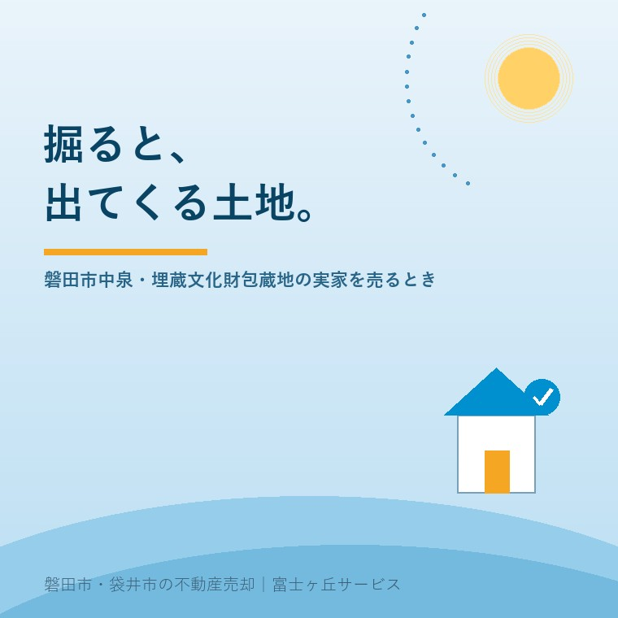

2026年8月13日｜カテゴリ：地域と不動産／コスト・税・制度

この記事の要点
Q. 中泉の実家を売ろうとしたら、不動産屋さんに「このあたりは遺跡の範囲かもしれない」と言われました。売れなくなるのでしょうか。
A. 売れなくなることはありません。ただし、買主が家を建てるまでの段取りが一つ増えます。「周知の埋蔵文化財包蔵地」に当たる土地では、文化財保護法第93条により、土木工事などで掘ろうとする場合は着手の60日前までに届け出る必要があります。届出があると、記録を残すための発掘調査などが指示されることがあります。大事なのは、売る前に「該当するかどうか」だけでも確かめておくこと。磐田市では文化財課（埋蔵文化財センター内）が範囲の確認に応じており、来課・電子申請・メールで受け付け、電話では対応していません。地番と場所を示した地図が必要です。費用負担については、文化庁は事業者負担を原則としつつ、個人が営利目的ではなく行う住宅建設等には公費で実施される制度があるとしています。磐田市・袋井市では、介護施設の運営から不動産事業を始めた富士ヶ丘サービスのような「介護×不動産」専門の会社に相談するという選択肢があります。
磐田は、古い土地です。
磐田市の説明によれば、市内にある遠江国分寺跡は昭和27年に国の特別史跡に指定されており、国府の北方に国分寺が建立され、その東側に府八幡宮が置かれたとされています。奈良時代、この一帯が遠江国の中心だったということです。
そういう土地に住むというのは、足の下に、千年以上前の生活の跡があるということでもあります。中泉から見付にかけての一帯には、そうした痕跡が広く残っています。
普段は意識しません。意識するのは、たいてい家を建てるとき、あるいは売るときです。今日は、その手続きの話をします。制度は、2026年8月13日時点で文化庁・磐田市が公表している内容と、法令の条文に沿って書きます。
まず言葉から整理します。
文化庁の説明によれば、埋蔵文化財とは「土地に埋蔵されている文化財（主に遺跡といわれている場所）」のことで、その存在が知られている土地は全国で約46万カ所あるとされています。
このうち、法律上の用語が「周知の埋蔵文化財包蔵地」です。文化財保護法第93条第1項は、これを「貝づか、古墳その他埋蔵文化財を包蔵する土地として周知されている土地」と定義しています。
ここで大切なのは、「周知されている」という言い方です。誰かが勝手に決めた線ではなく、これまでの発掘や調査の積み重ねで、遺跡があると分かっている範囲を指します。ですから、市が持っている遺跡地図で確認できます。
そして——これも大切な点ですが——包蔵地に当たること自体は、土地の欠陥ではありません。その土地に歴史があるというだけの話です。ただ、掘るときに手続きが要る。それだけです。
手続きの中心は、文化財保護法第93条です。条文はこうなっています。
土木工事その他埋蔵文化財の調査以外の目的で、貝づか、古墳その他埋蔵文化財を包蔵する土地として周知されている土地（以下「周知の埋蔵文化財包蔵地」という。）を発掘しようとする場合には、前条第一項の規定を準用する。この場合において、同項中「三十日前」とあるのは、「六十日前」と読み替えるものとする。
準用元である第92条第1項は、「発掘に着手しようとする日の三十日前までに文化庁長官に届け出なければならない」と定めています。これを読み替えるので、土木工事のために包蔵地を掘る場合は、着手の60日前までということになります。
実務上は、文化庁が説明しているとおり、都道府県等の教育委員会に事前の届出等を行う形になります。窓口の流れは自治体ごとに案内がありますので、磐田市内の土地であれば磐田市文化財課にお尋ねください。
届出のあとについても、条文に書かれています。第93条第2項は、埋蔵文化財の保護上特に必要があると認めるときは、文化庁長官が、当該発掘前における埋蔵文化財の記録の作成のための発掘調査の実施その他の必要な事項を指示することができるとしています。
つまり、「届け出たら必ず全面的な発掘になる」わけではありません。必要と判断されたときに、必要な範囲で指示が出る、という仕組みです。
60日は、感覚としては「二か月」です。買主が家を建てる計画を立てるとき、設計と資金の段取りに、この二か月を織り込む必要があるということになります。
売主にとっての実害は、ほぼここだけです。土地が売れなくなるのではなく、買主のスケジュールが二か月ぶん前倒しで動く。だからこそ、その事実を最初に伝えておくことに意味があります。契約してから発覚するのと、はじめから分かっているのとでは、買主の受け止め方がまったく違います。
磐田市は、遺跡の範囲の確認方法をはっきり案内しています。市の説明では、遺跡の範囲（周知の埋蔵文化財包蔵地）の確認は文化財課へとされ、次の点が明記されています。
| 項目 | 内容 |
|---|---|
| 受付方法 | 来課、電子申請、メールで対応 |
| 電話 | 遺跡の範囲の確認は、電話での対応は行っていない |
| 必要なもの | 地番および当該地を示した地図を持参または送付 |
| 窓口 | 文化財課（磐田市埋蔵文化財センター内）／磐田市見付3678-1 |
| 進め方 | 市は「なるべく早い時期（設計を行う前）に文化財課と計画内容の協議を」と案内している |
電話では答えてもらえないという点は、覚えておいてください。土地の範囲の話ですから、口頭では正確を期せないという趣旨だと理解しています。地番が分かる書類——固定資産税の納税通知書に付いている課税明細や、登記事項証明書——を先に用意しておくと早いです。
ご実家の地番が分からないという方は、まず名義と不動産の記録をたどる手順から始めてください。
ここは、ご相談者がいちばん不安に感じる部分です。順を追って書きます。
もう一つ、覚えておいていただきたい条文があります。文化財保護法第96条第1項です。
土地の所有者又は占有者が出土品の出土等により貝づか、住居跡、古墳その他遺跡と認められるものを発見したときは、（中略）その現状を変更することなく、遅滞なく、文部科学省令の定める事項を記載した書面をもつて、その旨を文化庁長官に届け出なければならない。
これは、包蔵地の範囲外であっても、たまたま何かが出てきたときの決まりです。庭を掘っていたら土器が出た、というような場合ですね。掘り返さず、そのままにして届け出るのが原則です。
同条第2項では、届出に係る遺跡が重要で保護のため調査が必要と認められるときは、現状を変更する行為の停止・禁止を命じることができるとされています。ただしその期間は3か月を超えることができず、延長する場合も通算6か月を超えてはならないと明記されています。期限のない停止ではないということです。
お金の話は、正直に書きます。
文化庁は、発掘調査の費用について「その経費については開発事業者に協力を求めています（事業者負担）」という原則を示しています。マンションや店舗を建てる事業であれば、その事業者が負担するという考え方です。
そのうえで、文化庁は例外も示しています。
個人が営利目的ではなく行う住宅建設等の場合は、国庫補助等、公費により実施される制度がある
ここは、実家の売却を考える方にとって重要です。ご実家の跡地を買って自宅を建てる方は、まさにこの「個人が営利目的ではなく行う住宅建設」に当たり得ます。
関連して、文化財保護法第99条は、地方公共団体が埋蔵文化財の発掘を施行できることを定め、第4項で「国は、地方公共団体に対し、第一項の発掘に要する経費の一部を補助することができる」としています。公費で支える仕組みが、法律の中に用意されているということです。
ただし、実際にどの制度がどの範囲で適用されるかは、土地と工事の内容によって変わります。金額の見込みを含め、必ず磐田市文化財課にご確認ください。この記事で「いくらかかる」と書かないのは、書けないからではなく、書いてはいけないからです。個別に違います。
宅地建物取引業者の立場から、実務の話を書きます。
土地の売買では、買主が「買ったあとに、その土地で何ができるか」を知ったうえで判断できることが大前提です。埋蔵文化財包蔵地に該当するかどうかは、買主の計画に直接影響する情報ですから、当社では調べて伝えることにしています。
伝え方には、コツがあります。
| 避けたい伝え方 | 望ましい伝え方 |
|---|---|
| 「遺跡の上なので何かあるかもしれません」 | 「市の遺跡地図で確認したところ、範囲に入っています／入っていません」 |
| 「調査で何年もかかるかもしれません」 | 「掘る工事をする場合、着手の60日前までに届出が要ります。内容の協議は設計前に行うよう市が案内しています」 |
| 「費用がいくらかかるか分かりません」 | 「事業者負担が原則ですが、個人の非営利の住宅建設には公費の制度があるとされています。詳細は市にご確認ください」 |
不確かなことを不確かなまま伝えると、買主の不安だけが大きくなります。調べられることは調べ、調べても分からないことは「分からない」と言い、確認先を示す。これが、結果として売主の利益にもなります。
中泉・見付の一帯は、宅地としての条件が良い場所です。2026年の公示地価の記事でも触れたとおり、市の中心部として評価されてきた地域です。手続きが一つあることを理由に、その価値を安く見積もる必要はありません。
なお、見付の古い町割りに特有の敷地形状については、見付の短冊形の敷地の記事にまとめています。歴史のある土地は、境界と手続きの両方に気を配るのが基本です。
当社は、磐田市見付で介護施設を運営するところから不動産の仕事を始めました。ご相談の入口は、たいてい「親が施設に入った」「親を看取った」です。
中泉や見付のご実家は、三代、四代と続いてきた家であることが珍しくありません。そういうお宅の売却では、価格の話より先に、ご家族の中で気持ちの整理が要ります。「先祖から預かった土地を手放していいのか」——何度も伺ってきた言葉です。
私はこう申し上げています。土地の歴史は、名義が変わっても消えません。むしろ、埋蔵文化財の届出という仕組みは、その歴史を次に引き継ぐために作られたものです。手続きが面倒だ、と考える必要はありません。
私たちが目指しているのは「高く売る」だけではなく、「家族が困らない売却」です。介護の見通し、相続の順番、そして土地固有の手続き。この3つを一度に見られることが、介護から始まった不動産会社の強みだと思っています。
価格の前に事実を整理する道具として、ふじがおか実家カルテを用意しています。
地面の下に歴史がある土地は、面倒な土地ではありません。手順が決まっている土地です。
まずは、固定資産税の通知書（地番の分かるもの）をご用意ください。それだけで、確認の順番を一枚にしてお渡しできます。
ふじがおか実家カルテ｜中泉・見付の実家にも対応します
地面の下のことも、先に調べます。
住所と地番をもとに、埋蔵文化財包蔵地に当たるかの確認先、届出の要否の見立て、名義と相続登記、境界標の状況、農地の有無を整理し、次に何を確認すべきかを1枚にしてお出しします。作成料0円・入力約1分。申込みだけで売却依頼にはなりません。
本記事は2026年8月13日時点で文化庁・磐田市等が公表している情報および法令の条文に基づく一般的な解説であり、個別の土地が周知の埋蔵文化財包蔵地に該当するか否かを判定するものではありません。該当の有無、届出の要否、必要な手続きと期間、調査の内容、費用負担の取扱いは、土地と工事の内容により異なりますので、必ず磐田市文化財課へご確認ください。遺跡の範囲の確認は電話では受け付けられていません（来課・電子申請・メール）。本文に引用した条文は執筆時点のものです。相続登記は司法書士、境界の確定は土地家屋調査士、譲渡に伴う税務は税理士、建築計画は建築士へご確認ください。個別のご相談は当社までどうぞ。
磐田市・袋井市の実家じまい・相続空き家相談
固定資産税通知書だけでも相談できます
住所があいまいでも、通知書や写真から名義・道路・農地・残置物の確認順を整理します。カルテ申込またはLINEで状況を送ってください。
富士ヶ丘サービス株式会社／静岡県磐田市見付5789番地1／TEL:0538-31-3308／静岡県知事 (2) 第14083号／代表取締役・宅地建物取引士 大石 浩之